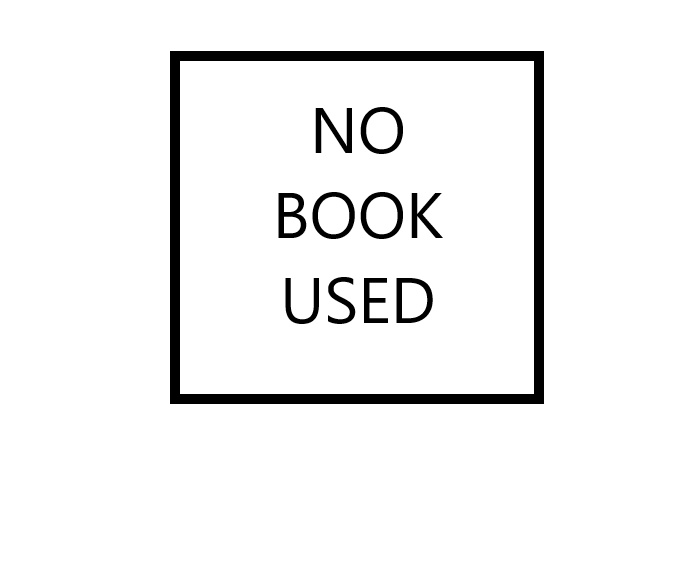
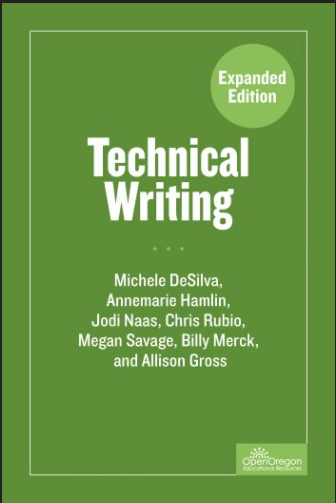
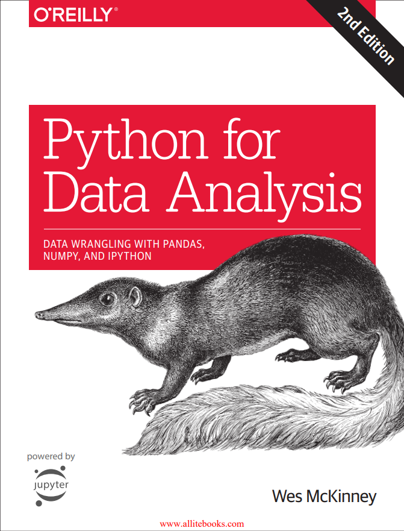

Course Portfolio
Programming Essentials with Python
Course Objectives
- Analyze, design, code, test, and document modular programs.
- Perform input, output, documentation, processing, and editing techniques.
- Use flowcharting components such as constants, variables, expressions, loops, conditional statements, and logical operators.
Textbook(s) used:
A Byte of Python
IT Visual Communications
Course Objectives
- Understand how to present information in a logical and visually compelling manner through presentations, participation in critiques and practical application assignments, as well as through the completion of in class looking and reflection exercises.
- Understand the fundamentals of graphic design and aesthetics through readings, in class discussions, research and practical application.
- Analyze cultural and historical aesthetics through research and the creation of concept boards.
- Apply the elements and principles of graphic design as evidenced by the creation of presentations and practical application of these principles.
- Evaluate designs through in class critiques and written assignments.
- Remember the fundamentals of graphic design through practical application, looking and reflection exercises.
Textbook(s) used:
Introduction to College Math
Course Objectives
- Apply basic math concepts and formulas to solve practical problems in their technical fields of study.
- Perform operations with polynomials.
- Perform operations with radical terms.
- Solve first degree equations.
- Solve right triangles using Pythagorean Theorem.
- Solve word problems.
Textbook(s) used:
College Math (School Created)
Introduction to Drawing
Course Objectives
- Insight into the historical significance of drawings.
- Knowledge of drawing media’s technical properties and ability to handle the various materials.
- Developed observational skills and awareness of the creative process.
- Ability to render objects using line, tone, and shape.
- Ability to evaluate (critique) your own work and the work of others based on developed awareness.
- Ability to apply the elements and principles of composition and design.
Textbook(s) used:
Windows Networking Essentials
Course Objectives
- Install and Configure Windows 7 Professional.
- Configure users and groups, NTFS permissions and shared folders.
- Configure TCP/IP, security policies and disk quotas.
- Monitor a network.
- Perform system backups and recover from system failure.
Textbook(s) used:
Intermediate Programming Using Python
Course Objectives
- Analyze, design, code, test, and document modular programs.
- Exhibit proficiency with file handling and array processing techniques.
- Implement sort and search algorithms.
- Develop and document programs.
- Use flowcharting components such as constants, variables, expressions, loops, conditional statements, and logical operators.
Textbook(s) used:
A Byte of Python
HTML and JavaScript
Course Objectives
- Understand the use of web-browsers, file organization, URLs and web-browser developer tools.
- Understand and utilize proper HTML 5 syntax and structure to create static web pages.
- Understand and manipulate the Document Object model using HTML 5 and JavaScript.
- Create dynamic web pages that process form data and manipulate the DOM.
- Understand and utilize event-driven and object-oriented principles to create dynamic web pages.
- Create GIT repositories and publish live sites.
Textbook(s) used:
Workplace Communications
Course Objectives
-
Understand and apply the rhetorical situation, as evidenced by:
- correctly identifying the speaker, audience, and purpose in various modes
- analyzing how the speaker, audience, and purpose influence the text created in various modes.
-
Analyze and evaluate the effectiveness of appeals to a specific audience in workplace
communications, as evidenced by:
- identifying intended audience and analyzing its needs
- producing written documents that effectively address audience’s needs
-
Analyze and create various business writing documents for specific purposes as evidenced by:
- analyzing various hypothetical professional scenarios
- producing emails, memos, business letters, and proposals
-
Analyze and evaluate writing and working in their technology, as evidenced by:
- researching and writing about different written genres in their technology
- researching their technology and reporting on the outcome
-
Analyze and evaluate their writing practice and abilities, as evidenced by:
- employing the writing process, including prewriting, researching, drafting, revising, peer reviewing, and editing
- engaging in active reading and critical thinking
- demonstrating proficiency in grammar, punctuation, and standard usage
- demonstrating proficiency in summarizing, paraphrasing, quoting, and citing in APA
- reflecting on their writing process
- critically evaluating their successes and challenges as writers and communicators in a professional space
- demonstrating proficiency in professional presentation techniques, as evidenced in the delivery of a well-rehearsed formal presentation using PowerPoint (or another) presentation software
Textbook(s) used:
Technical Writing

Technical Math I
Course Objectives
- Graph linear equations on a rectangular coordinate system.
- Solve 2x2 and 3x3 systems of equations using the addition and substitution methods.
- Calculate all trig functions of an angle.
- Find both inverses of sin, cos, tan between 0 and 360 degrees.
- Add vectors by resolving into their x and y components.
- Find distance and slope between two points and find the equation of a line, given two points.
- Factor polynomials.
- Perform basic operations with rational expressions.
- Solve quadratic equations by factoring and formula.
Textbook(s) used:
Technical Math I (School Created)
Introduction to Database Management Systems
Course Objectives
- Query both stand-alone and linked tables using SELECT statements. You will learn how to retrieve subsets of records from tables as well as summarize numerical data through the use of GROUP BY clauses. In- class assignments are designed for you to practice and demonstrate these concepts. Both the final and midterm exams will include questions regarding this objective.
- Manipulate data residing in tables using INSERT, UPDATE and DELETE statements. In-class assignments are designed for you to practice and demonstrate these concepts. Both the final and midterm exams will include questions regarding this objective.
- Design a database by determining the fields in each table and identifying how tables are linked through appropriate foreign keys. We will work through case studies in class and you will create a database design for a scenario of your own choosing. You will use Visio to document the design.
- Implement databases in SQL Server the appropriate Data Definition Language (DDL). Through in-class and out-of-class assignments and questions on midterm and final exams you will demonstrate your understanding of CREATE TABLE statements.
- Code simple stored procedures and triggers in SQL Server.
- Understand subtle and not so subtle differences between SQL Server and MySQL as demonstrated by a well-designed discussion/presentation.
Textbook(s) used:
Cascading Style Sheets
Course Objectives
- The syllabus for this course is not currently available, will update soon.
Textbook(s) used:
C#
Course Objectives
- Design, build, execute and debug C# applications.
- Use variables, strings, dates, arrays, and collections in C# applications.
- Use flow control statements in C# applications.
- Utilize exception handling and data validation to deal with system and user errors.
- Use the basic concepts of object oriented programming to create C# applications.
- Use proper object-oriented programming techniques as evidenced by programming assignments and practical mid-term and final exams.
- Build coding interfaces implementing classes, as evidenced by programming assignments and practical mid-term and final exams.
- Retrieve and display information from a database, as evidenced by programming assignments and practical mid-term and final exams.
- Explain and document their code and projects, as evidenced by their code documentation and explanations within the class discussions as well as those specifically with the teacher.
- Students will demonstrate the necessary steps involved in developing small to medium-sized applications/programs from start to finish as evidenced by the satisfactory completion of the required Lab Assignments and the Cumulative Practical Final Exam.
- Where industry data is requires, students will complete the research and analysis necessary to legally and ethically apply the appropriate coding and data within their technical documents, and code implementation.
- Explain and document their code and projects.
Textbook(s) used:
Business Mathematics
Course Objectives
- Express ratios three different ways and solve word problems by proportion when given a ratio or rate.
- Calculate and interpret the mean, median, mode, and standard deviation for a data set.
- Solve word problems using sales tax rates and property tax rates.
- Calculate the premium and indemnity for fire, motor vehicle and life insurance.
- Calculate gross pay, FICA, Federal Withholding tax and net pay for an employee.
- Distribute overhead based on department sales, square footage, or number of employees.
- Distribute profits and losses for sole proprietorships, partnerships, and corporations.
Textbook(s) used:
Business Mathematics (School Created)
Introduction to Data Analytics
Course Objectives
- Explain the different phases of a typical data engineering project.
- Use Excel functions to sort, filter, summarize data, and prepare relevant charts.
- Use Python’s built-in data structures, and external libraries to store, manipulate and extract relevant data and display the results through meaningful outputs.
- Use a Python editor to present findings in an organized, and user-friendly manner.
- Gain certificates via DataCamp.
Textbook(s) used:
Python for Data Analysis

JavaScript
Course Objectives
- Create small event driven web applications by applying knowledge obtained from previous courses, independent research and in-class discussions.
- Understand and document the use of client-side scripts as evidenced by the clear and explicit commenting of one’s code.
- Understand and apply the concept of asynchronous programming as evidenced by the creation of JavaScript code that utilizes AJAX to communicate between client and server-side scripts.
- Evaluate and utilize contemporary JavaScript Frameworks and APIs to streamline development.
Textbook(s) used:
Web Development Using .NET
Course Objectives
- Analyze, design, code, test and document modular programs as evidenced by satisfactory performance on programming assignments and a practical final exam.
- Perform input, output, documentation and editing techniques as evidenced by satisfactory performance on programming assignments and a practical final exam.
- Use flowcharting components such as constants, variables, expressions, loops, conditional statements, and logical operators as evidenced by satisfactory performance on programming assignments and a practical final exam.
- Use control breaks, interactive processing, array and menu processing as evidenced by satisfactory performance on programming assignments and a practical final exam.
- Understand, discuss, and implement programming techniques and technologies that are specific to web-based interfaces as evidenced by satisfactory performance on programming assignments and a practical final exam.
- Implement Database integration including adding, editing, searching, sorting, and deleting data as evidenced by satisfactory performance on programming assignments and a practical final exam.
- Understand and create reusable classes, function libraries, and website templates as evidenced by satisfactory performance on programming assignments and a practical ASP.NET web forms Exam.
- Create and implement reusable programming/design components using the MVC (Model View Controller) Framework, allowing separation of scripting related to Data Retrieval, Application logic, and Layout.
- Students will demonstrate the necessary steps involved in developing small to medium- sized applications/programs from start to finish as evidenced by the satisfactory completion of the required Lab Assignments and the Cumulative Practical Final Exam.
- Where industry data is required, students will complete the research and analysis necessary to legally and ethically apply the appropriate coding and data within their technical documents, and code implementation.
Textbook(s) used: